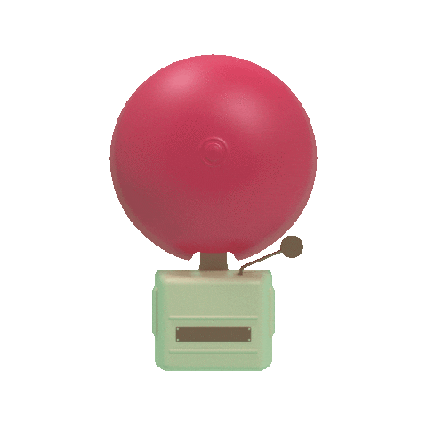

<ion-toolbar color="danger">
  <!-- back button -->
  <!-- <ion-buttons slot="start">
    <ion-button>
      <ion-icon name="arrow-back-sharp" class="back"></ion-icon>
    </ion-button>
  </ion-buttons> -->
  <ion-buttons slot="end">
    <ion-button (click)="presentPopover($event)" fill="clear" slot="end">
      <ion-icon slot="icon-only" ios="ellipsis-vertical" md="ellipsis-vertical"></ion-icon>
      <!-- <ion-icon name="notifications-sharp" class="notif"></ion-icon> -->
    </ion-button>
  </ion-buttons>
    <div class="logo">
      
    </div>
  <!-- <ion-title>D-flame</ion-title> -->
</ion-toolbar>


<ion-content>

<div class="img-alarm">
  <svg class="back-blob" viewBox="0 0 200 200" xmlns="http://www.w3.org/2000/svg">
    <path fill="#FF7733" d="M37.2,-66.2C45.2,-59.7,46.8,-43.8,54.1,-31.2C61.4,-18.6,74.4,-9.3,74.7,0.2C75.1,9.7,62.8,19.4,54.5,30.4C46.3,41.3,42.1,53.5,33.7,56.2C25.3,58.9,12.6,52.1,0.7,50.9C-11.2,49.7,-22.5,54.1,-32.6,52.3C-42.7,50.6,-51.6,42.8,-56.5,33C-61.5,23.3,-62.5,11.6,-65.8,-1.9C-69.2,-15.5,-75,-31.1,-68,-37.3C-61.1,-43.6,-41.4,-40.6,-27.9,-44C-14.5,-47.3,-7.2,-57.1,3.7,-63.4C14.6,-69.7,29.1,-72.7,37.2,-66.2Z" transform="translate(100 100)" />
  </svg> 
    <!-- <ion-toggle [(ngModel)]="On" (ionChange)="change()"></ion-toggle> -->
    
    
    <!--  -->
</div>
<div class="tg-btn">
  <ion-toggle [(ngModel)]="On" (ionChange)="change()"></ion-toggle>
</div>
  
  <!-- <button class="lbutton" shape="round" size="large" expand="full">ON</button>   -->
</ion-content>
